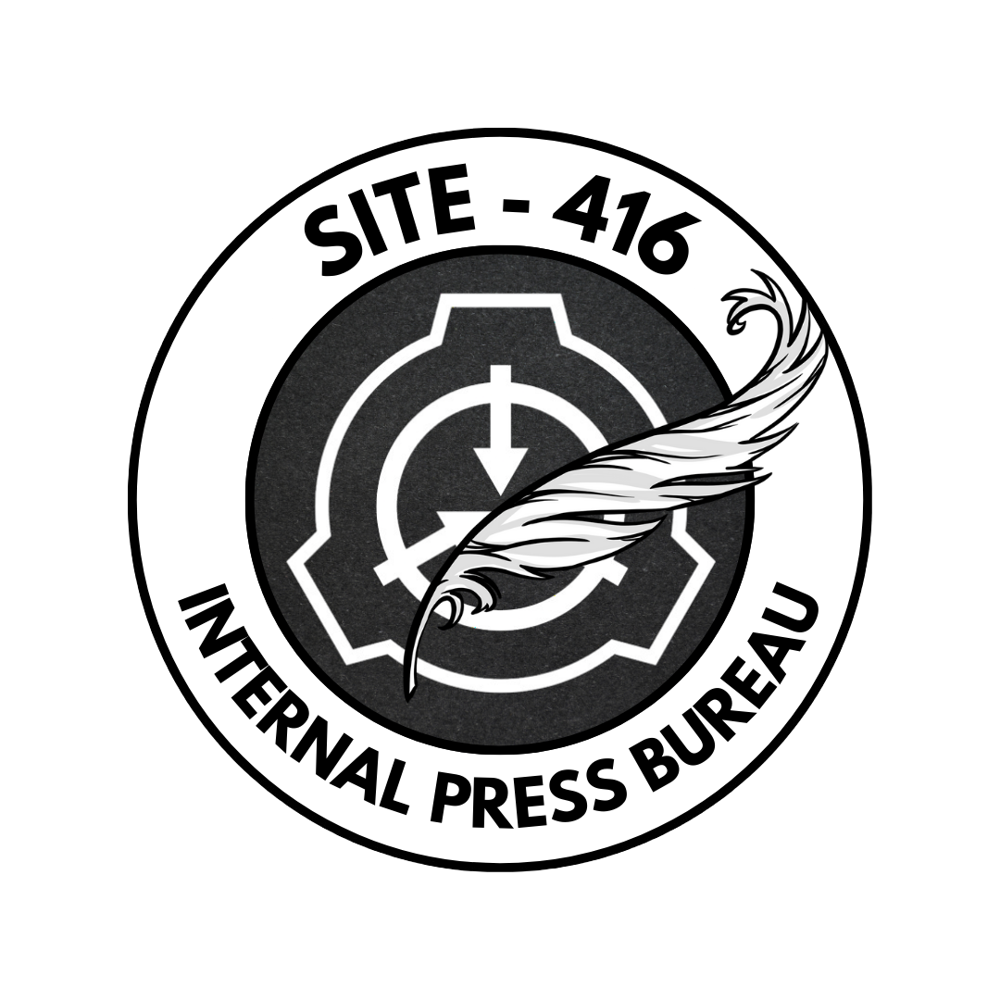

The Internal Press Bureau is responsible for collecting and publishing authentic stories within Site-416. IPB serves a critical internal role in revealing the truth while complying with Foundation communication standards. We cover stories ranging from incident summaries, exclusive interviews, operation updates and juicy gossip.
“We report with precision, frame with discretion, and preserve stability through controlled knowledge.”